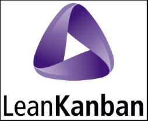
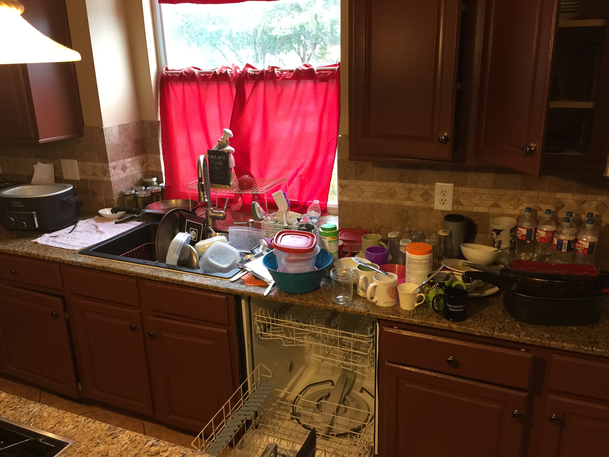
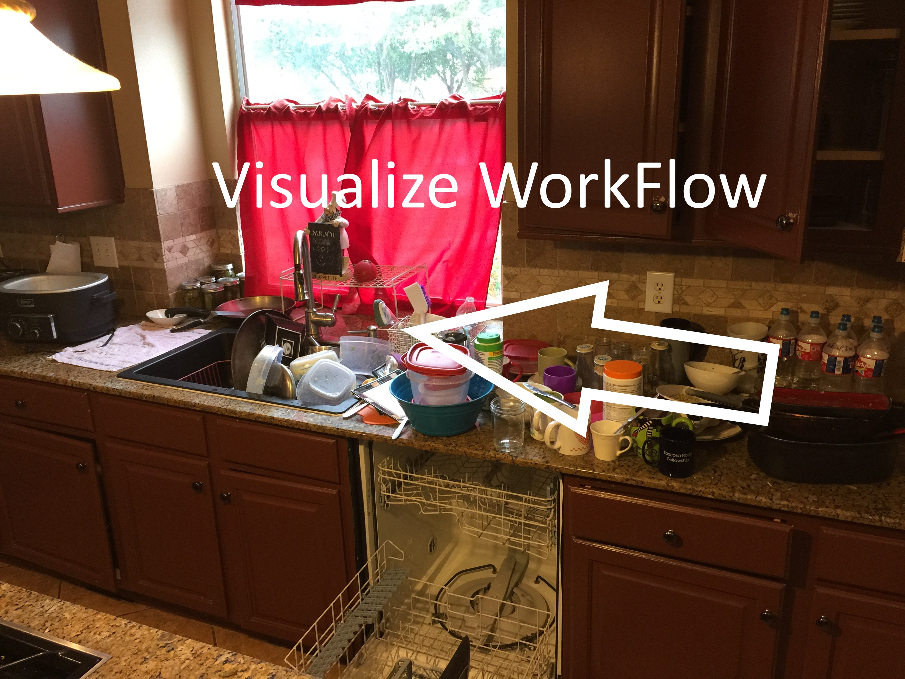
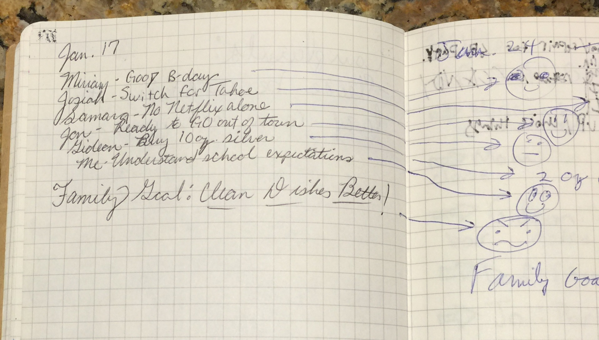
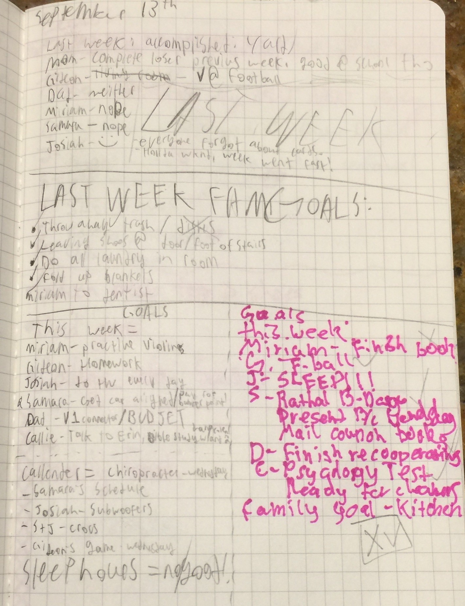
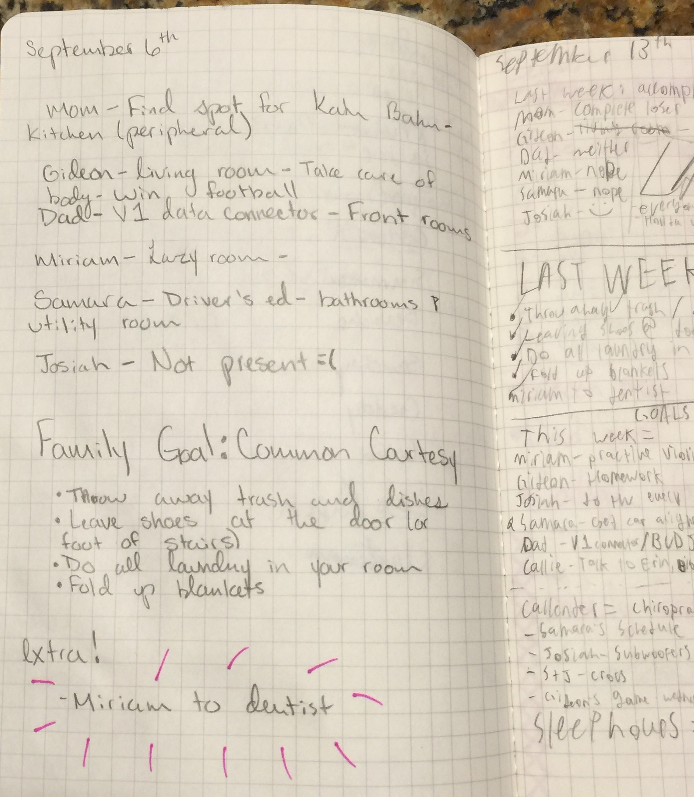
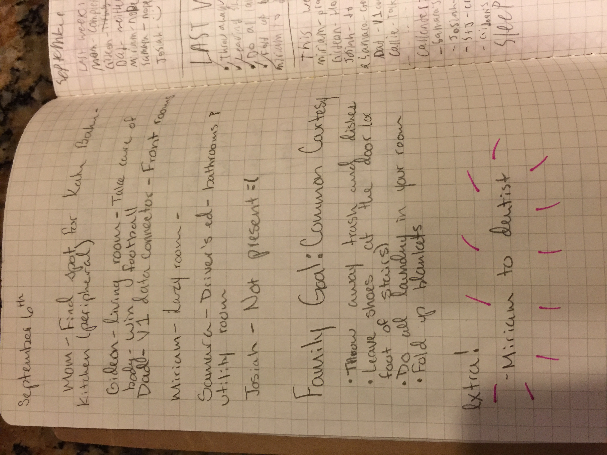
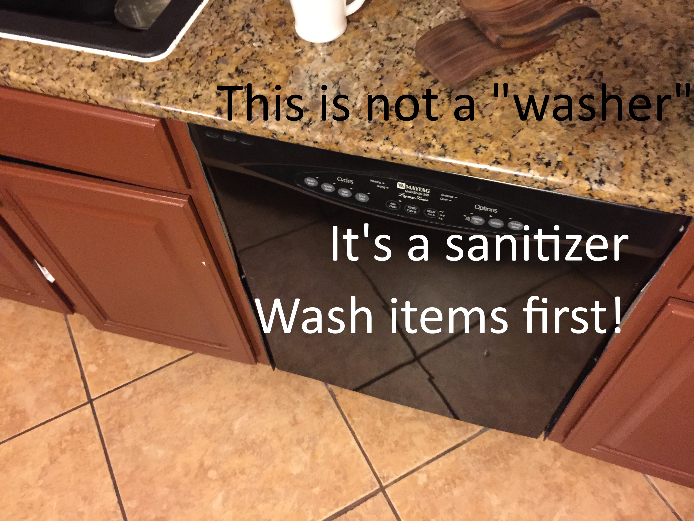
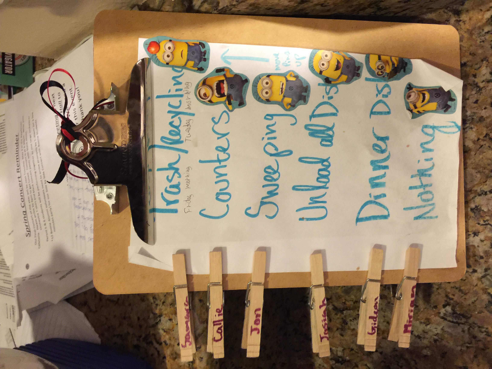
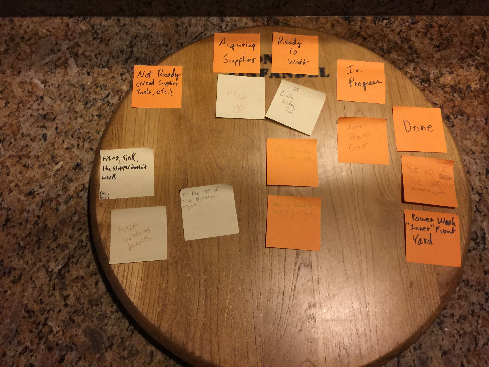

What is Kanban?
Word Origin is Japanese
Literal Translation of 看板: signboard
But It's Different Than Kanban for Manufacturing

Origins of Kanban for Knowledge Work

- Began with David Anderson using "Drum-Buffer-Rope" Method at Microsoft in 2004
- More Info: http://www.djaa.com/brief-history-kanban-knowledge-work
The Kanban Method
Principles
- Start with what you do now
- Agree to pursue incremental, evolutionary change
- Respect the current process, roles, responsibilities & titles
- Encourage acts of leadership at all levels in your organization
The Kanban Method
General Practices
- Visualize (the work, workflow and business risks)
- Limit WIP
- Manage Flow
- Make Process Explicit
- Implement Feedback Loops
- Improve Collaboratively, Evolve Experimentally (using models & the scientific method)
Example:
Kanban at Home
Kanban at Home
The Team (age when started experiment)
- Dad (more than 30)
- Mom (less than 40)
- Samara (16)
- Josiah (15)
- Gideon (13)
- Miriam (11)
Kanban at Home
Is this Kanban? 
Kanban at Home
Yes, it can be! 
Cultural Obstacles to
Kanban at Home
- Dictatorship (Rigid Hierarchy)
- Closed Culture (Dissent/Conflict is discouraged or punished)
- Boring Meetings
- Only Ideas From the Leadership (Mom and Dad)
- Too Many Ideas From Leadership (Selling Ideas to Rank and File)
Kanban at Home
Initial Target Areas
- Laundry
- Dishes
Kanban at Home
Observations and Learnings
- Had to be OK allowing some experiments that we "knew" wouldn't work
- Took longer than initially anticipated for buy-in and ownership
Kanban at Home
Kaizen With Weekly Meetings
- logs kept
- leader rotates
Kanban at Home
Meeting Log Example

Kanban at Home
Meeting Log Example

Kanban at Home
Meeting Log Example

Kanban at Home
Meeting Log Example

Kanban at Home
Learning and Experimenting

Kanban at Home
Innovations
- Chore Chart
- Dirty Dish
Kanban at Home
Chore Chart

Kanban at Home
Dirty Dish
Kanban at Home today
